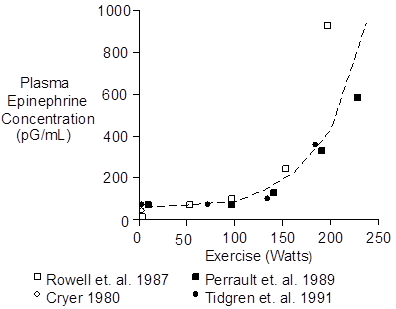
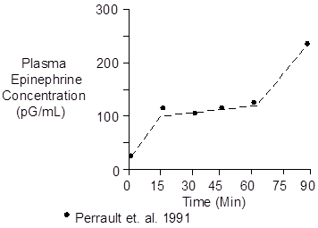

Exercise > Epinephrine
Plasma epinephrine concentration increases during aerobic exercise in proportion to the intensity of the exercise.

Anaerobic exercise provokes even greater concentration increases (see Skeletal Muscle Afferent Nerves). In the curve above, anaerobic metabolism probably contributed to the steep epinephrine increase seen at 200 Watts and above. Heart rates were 175 to 180 beats per minute at the most strenuous level of exercise.
Plasma epinephrine concentration increases very rapidly at the beginning of exercise. But when exercise targets a specific workload, epinephrine increases even further, but less rapidly, over time, as shown below.

The workload in this case was 67% of maximum O2 uptake.
The cause of the secondary epinephrine increase was probably increased exertion compensating for fatiguing muscles. Another possibility is worsening acidosis (see Skeletal Muscle Afferent Nerves).
High norepinephrine and epinephrine concentrations may stimulate glucagon secretion (Galbo et. at. 1975). The glucagon, in turn, would liberate glucose to help fuel the anaerobic metabolism.
 Effects
Effects
The hemodynamic and metabolic effects of increased epinephrine concentrations begin at concentrations slightly above the normal resting concentration, as shown in the table below (Clutter et. al. 1980).
| [Epinephrine] | Effect |
| (pG/mL) | |
| 40 | Resting |
| 50 - 100 | Increased Heart Rate |
| 75 - 125 | Increased Systolic Pressure |
| Lipolysis | |
| 150 – 200 | Decreased Diastolic Pressure |
| Increased Liver Glucose Release | |
| Increased Blood Lactate | |
| Increased Ketoacid Synthesis | |
| > 400 | Decreased Insulin Secretion |
Chemistry
Epinephrine has a molecular weight of 183. Its composition is C9H13NO3.
Epinephrine concentration in plasma is typically 40 pG/mL or 0.22 nMol/L (Clutter et. al. 1980, Cryer 1980, Fitzgerald et. al. 1980, Planz and Planz 1979).
Typical adrenal epinephrine secretion is 150 nG/Min.
Units
Common units for endogenous plasma concentration are pG/mL and pMol/L. To convert pG/mL to pMol/L, multiply by 5.46.
References
Clutter, W.E., D.M. Bier, S.D. Shah and P. E. Cryer. Epinephrine plasma metabolic clearance rates and physiological thresholds for metabolic and hemodynamic actions in man. J. Clin. Invest. 66:94-101, 1980.
Cryer, P.E. Physiology and pathophysiology of the human sympathoadrenal neuroendocrine system. New Eng. J. Med. 303:436-444, 1980.
Fitzgerald, G.A., P. Barnes, C.A. Hamilton and C.T. Dollery. Circulating adrenaline and blood pressure: the metabolic effects and kinetics of infused adrenaline in man. Europ. J. Clin. Invest. 10:401-406, 1980.
Galbo, H., J.J. Holst and N.J. Christensen. Glucagon and plasma catecholamine responses to graded and prolonged exercise in man. J. Appl. Physiol. 38:70-76, 1975.
Perrault, H., M. Cantin, G. Thibault, G.R. Brisson, G. Brisson and M. Beland. Plasma atriopeptin response to prolonged cycling in humans. J. Appl. Physiol. 70:979-987, 1991.
Planz, G. and R. Planz. Dopamine-beta-hydroxylase, adrenaline, noradrenaline and dopamine in the venous blood of adrenal gland of man: a comparison with levels in the periphery of the circulation. Experientia 35:207-208, 1979.
Rowell, L.B., G.L. Brengelmann and P.R. Freund. Unaltered norepinephrine-heart rate relationship in exercise with exogenous heat. J. Appl. Physiol. 62:646-650, 1987.
Tidgren, B., P. Hjemdahl, E. Theodorsson and J. Nussberger. Renal neurohormal and vascular responses to dynamic exercise in humans. J. Appl. Physiol. 70:2279-2286, 1991.